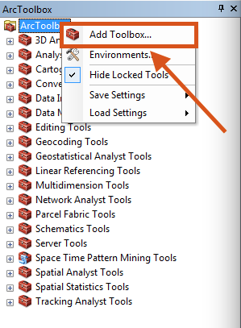
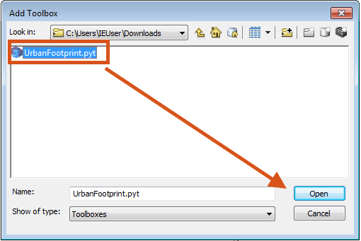
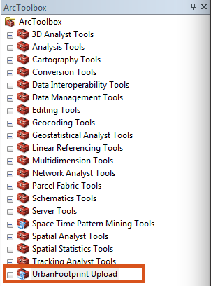
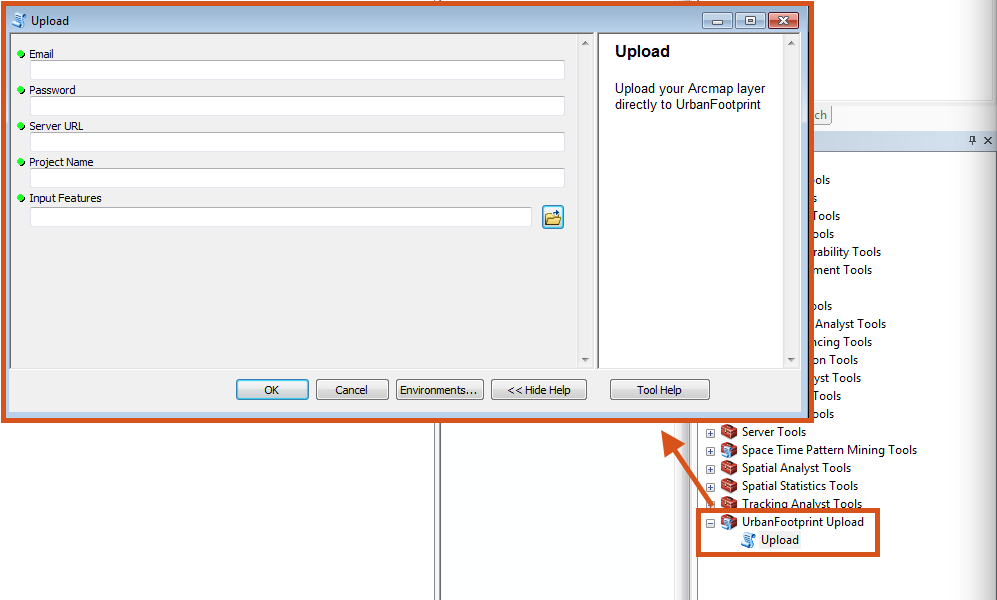
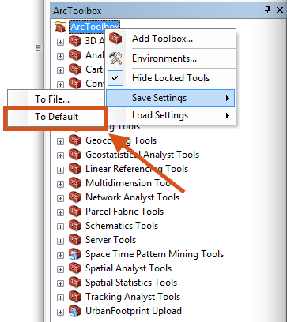
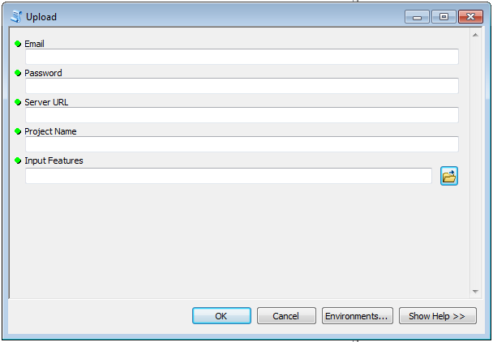
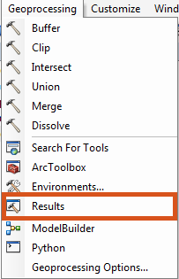
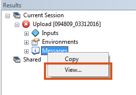
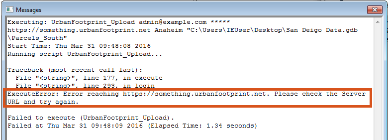
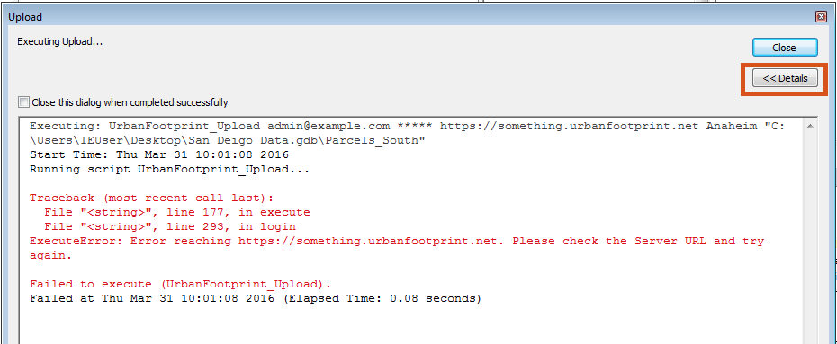

UrbanFootprint ArcMap Integration Tool
System Requirements / Supported Version
- ArcMap 10.3
- ArcMap 10.4
Download
Steps to Download UrbanFootprint Upload Toolbox
- Open ArcMap
- Navigate to the ArcToolbox section
-
Right click on ArcToolbox and select 'AddToolbox...'

-
Navigate to the Upload toolbox and click open

-
You should now see it at the bottom of your ArcToolbox


Tip: If you would like the toolbox to appear every time you launch ArcMap, right click on the ArcToolbox again and select Save Settings > To Default

How to use the UrbanFootprint Upload Toolbox
This customized python toolbox (.pyt) allows ArcMap users to upload their layers directly to UrbanFootprint with built-in ArcMap functionality.
UrbanFootprint Upload Toolbox

This ArcMap toolbox has 5 inputs described below:
Email: The email address used to login to UrbanFootprint
Password: The password used to login to UrbanFootprint
Server URL: The url of UrbanFootprint (Example: https://example.urbanfootprint.net)
Project Name: The name of the project in UrbanFootprint - case sensitive (Example: Anaheim)
Input Features: Drag a layer from ArcMap or browse to the layer using the
Upload Toolbox Instructions
- Enter all of the above fields and click OK
- After the dialog succeeds, open UrbanFootprint
- Your layer is now in UrbanFootprint!
Troubleshooting
If your layer is not in UrbanFootprint, please try the following steps:
-
Navigate to the 'Results' section in ArcMap and view the messages.
 
-
Look for an 'ExecuteError' in the messages. In this example, the Server URL is incorrect. 
-
Address the issue listed in the messages and try upload again.
Hint: To see the error right away, try showing the 'Details' of your toolbox. This dialog pops up after you click OK on the Upload tool. 